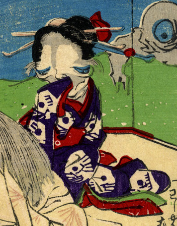

頭に大きな簪を挿した娘の化物。髑髏柄の着物の袖口で顔を隠している。娘自身の顔も骨張っている。
出典：親書誌：U426_nichibunken_0226：化物の嫁入；バケモノノヨメイリ／日付：2010／資源識別子：U426_nichibunken_0226_0002_0000
Copyright (c)2010- International Research Center for Japanese Studies, Kyoto, Japan. All rights reserved.